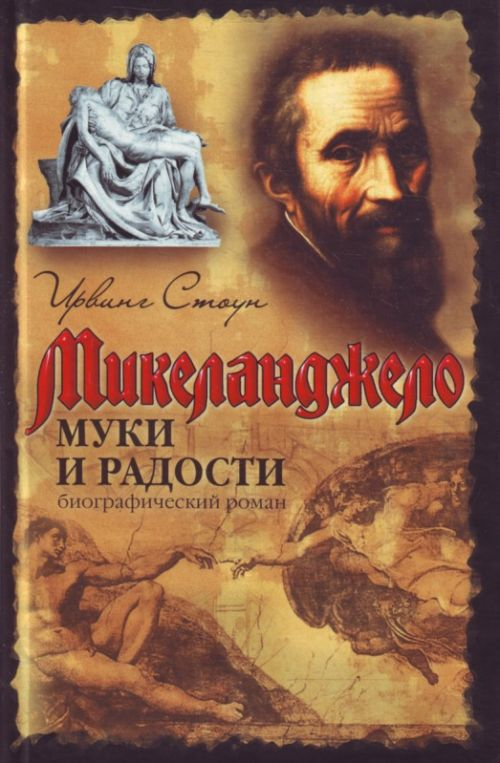

Ирвинг Стоун "Муки и радости"
Микеланджело Буонаротти.
Величайший скульптор, художник и поэт эпохи Возрождения. Создатель легендарного "Давида" и фресок Сикстинской капеллы.
Он познал и прижизненную славу, и богатство, и зависть врагов, и ненависть ханжей и религиозных фанатиков.
Его личная жизнь считалась скандальной и непристойной. Его творчество порой шокировало и возмущало. Его благополучие полностью зависело от капризов "князей Церкви", которые были его заказчиками...
Почему Микеланджело постоянно существовал на грани - между творчеством и саморазрушением?
И наконец, что давало ему силы вновь и вновь бросать вызов судьбе?
